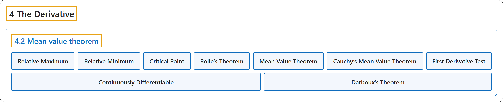

4.2 Mean value theorem
Classification

Glossary
| Term | Definition | 中文翻译 | Source |
|---|---|---|---|
| 4.2 Mean value theorem 中值定理 |
(No definition) | （无定义） | Lebl, 2026, section 4.2 |
| Relative Maximum 相对极大值 |
"Let \(S \subset \mathbb{R}\) be a set and let \(f \colon S \to \mathbb{R}\) be a function. The function \(f\) is said to have a relative maximum at \(c \in S\) if there exists a \(\delta>0\) such that for all \(x \in S\) where \(\lvert x-c \rvert < \delta\), we have \(f(x) \leq f(c)\)." | 设 \(S \subset \mathbb{R}\) 是集合，\(f \colon S \to \mathbb{R}\) 是函数。若存在 \(\delta>0\)，使得对所有满足 \(\lvert x-c \rvert < \delta\) 的 \(x \in S\) 有 \(f(x) \leq f(c)\)，则称 \(f\) 在 \(c \in S\) 处有相对极大值。 | Lebl, 2026, Definition 4.2.1 |
| Relative Minimum 相对极小值 |
"The definition of relative minimum is analogous." | 相对极小值的定义类似。 | Lebl, 2026, Definition 4.2.1 |
| Critical Point 临界点 |
"For a differentiable function, a point where \(f'(c) = 0\) is called a critical point." | 对可微函数，使 \(f'(c) = 0\) 的点称为临界点。 | Lebl, 2026, section 4.2 |
| Rolle’s Theorem 罗尔定理 |
"Let \(f \colon [a,b] \to \mathbb{R}\) be a continuous function differentiable on \((a,b)\) such that \(f(a) = f(b)\). Then there exists a \(c \in (a,b)\) such that \(f'(c) = 0\)." | 设 \(f \colon [a,b] \to \mathbb{R}\) 是在 \((a,b)\) 上可微的连续函数，且 \(f(a) = f(b)\)，则存在 \(c \in (a,b)\) 使得 \(f'(c) = 0\)。 | Lebl, 2026, Theorem 4.2.3 |
| Mean Value Theorem 中值定理 |
"Let \(f \colon [a,b] \to \mathbb{R}\) be a continuous function differentiable on \((a,b)\). Then there exists a point \(c \in (a,b)\) such that \(f(b)-f(a) = f'(c)(b-a)\)." | 设 \(f \colon [a,b] \to \mathbb{R}\) 是在 \((a,b)\) 上可微的连续函数，则存在点 \(c \in (a,b)\) 使得 \(f(b)-f(a) = f'(c)(b-a)\)。 | Lebl, 2026, Theorem 4.2.4 |
| Cauchy’s Mean Value Theorem 柯西中值定理 |
"Let \(f \colon [a,b] \to \mathbb{R}\) and \(\varphi \colon [a,b] \to \mathbb{R}\) be continuous functions differentiable on \((a,b)\). Then there exists a point \(c \in (a,b)\) such that \(\bigl(f(b)-f(a)\bigr)\varphi'(c) = f'(c)\bigl(\varphi(b)-\varphi(a)\bigr)\)." | 设 \(f \colon [a,b] \to \mathbb{R}\) 与 \(\varphi \colon [a,b] \to \mathbb{R}\) 是在 \((a,b)\) 上可微的连续函数，则存在点 \(c \in (a,b)\) 使得 \(\bigl(f(b)-f(a)\bigr)\varphi'(c) = f'(c)\bigl(\varphi(b)-\varphi(a)\bigr)\)。 | Lebl, 2026, Theorem 4.2.5 |
| First Derivative Test 一阶导数判别法 |
"Let \(f \colon (a,b) \to \mathbb{R}\) be continuous. Let \(c \in (a,b)\) and suppose \(f\) is differentiable on \((a,c)\) and \((c,b)\). If \(f'(x) \leq 0\) whenever \(x \in (a,c)\) and \(f'(x) \geq 0\) whenever \(x \in (c,b)\), then \(f\) has an absolute minimum at \(c\). If \(f'(x) \geq 0\) whenever \(x \in (a,c)\) and \(f'(x) \leq 0\) whenever \(x \in (c,b)\), then \(f\) has an absolute maximum at \(c\)." | 设 \(f \colon (a,b) \to \mathbb{R}\) 连续，\(c \in (a,b)\)，且 \(f\) 在 \((a,c)\) 和 \((c,b)\) 上可微。若 \(x \in (a,c)\) 时 \(f'(x) \leq 0\)，\(x \in (c,b)\) 时 \(f'(x) \geq 0\)，则 \(f\) 在 \(c\) 处取得绝对最小值。若 \(x \in (a,c)\) 时 \(f'(x) \geq 0\)，\(x \in (c,b)\) 时 \(f'(x) \leq 0\)，则 \(f\) 在 \(c\) 处取得绝对最大值。 | Lebl, 2026, Proposition 4.2.9 |
| Continuously Differentiable 连续可微 |
"If \(f \colon I \to \mathbb{R}\) is differentiable and the derivative \(f'\) is continuous on \(I\), then we say \(f\) is continuously differentiable." | 若 \(f \colon I \to \mathbb{R}\) 可微且导数 \(f'\) 在 \(I\) 上连续，则称 \(f\) 连续可微。 | Lebl, 2026, section 4.2 |
| Darboux’s Theorem 达布定理 |
"Let \(f \colon [a,b] \to \mathbb{R}\) be differentiable. Suppose \(y \in \mathbb{R}\) is such that \(f'(a) < y < f'(b)\) or \(f'(a) > y > f'(b)\). Then there exists a \(c \in (a,b)\) such that \(f'(c) = y\)." | 设 \(f \colon [a,b] \to \mathbb{R}\) 可微，\(y \in \mathbb{R}\) 满足 \(f'(a) < y < f'(b)\) 或 \(f'(a) > y > f'(b)\)，则存在 \(c \in (a,b)\) 使得 \(f'(c) = y\)。 | Lebl, 2026, Theorem 4.2.11 |
References
Lebl, J. (2026). Basic analysis I & II: Introduction to real analysis (May 22, 2026 edition). Retrieved October 29, 2026, from https://www.jirka.org/ra/html/